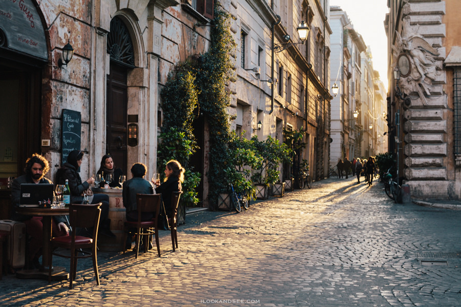
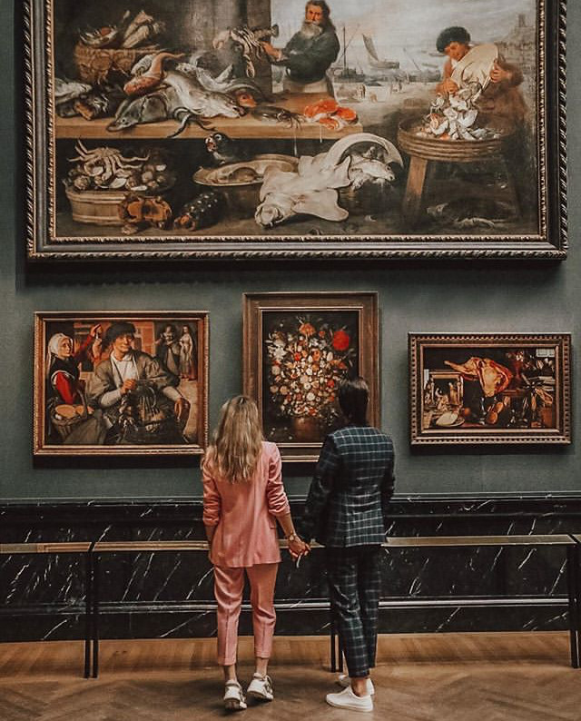
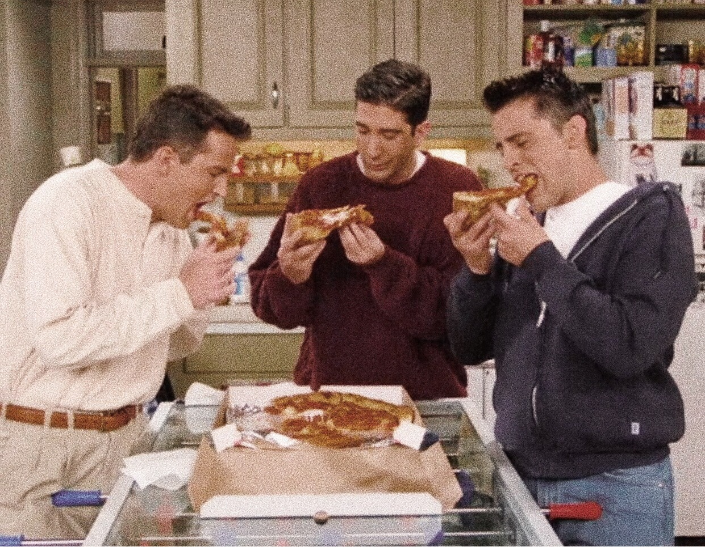
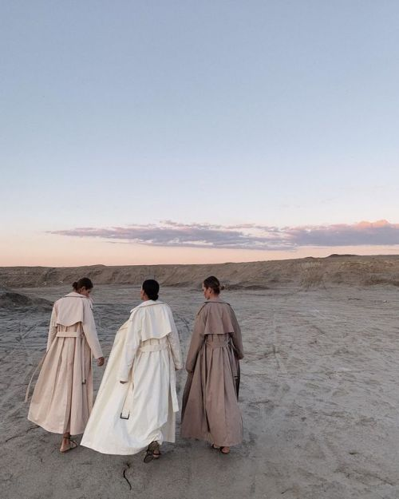
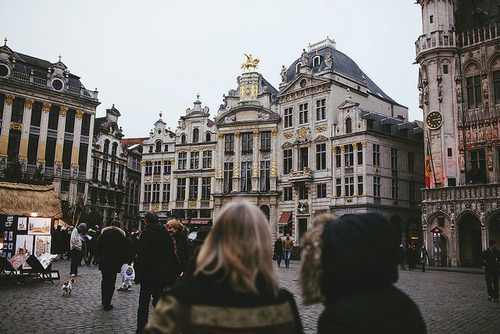

Waldeinsamkeit

German
“The feeling of solitude and connectedness to nature when being alone in the woods.”
Fernweh
German
"Being homesick for a place you’ve never ever been to."
Sobremesa 
Spanish
"The moment after eating a meal when the food is gone but the conversation is still flowing at the table."
Duende 
Spanish
“A work of art’s mysterious power to deeply move a person.”
Hygge
Danish
“A quality of coziness and comfortable conviviality that engenders a feeling of contentment or well-being ”
Shemomedjamo 
Georgian
"To eat past the point of fullness because the food is so delicious, roughly translates to “I accidentally ate the whole thing.""
Voorpret
Dutch
“Pre-fun, the sense of enjoyment felt before a party or event takes place”
Retrouvailles 
French
“The happiness that fills your heart when you meet someone after a very long time”
Flâner 
French
"The art of leisurely strolling through the streets without any goal or destination simply for the pleasure of soaking up the city's beauty"